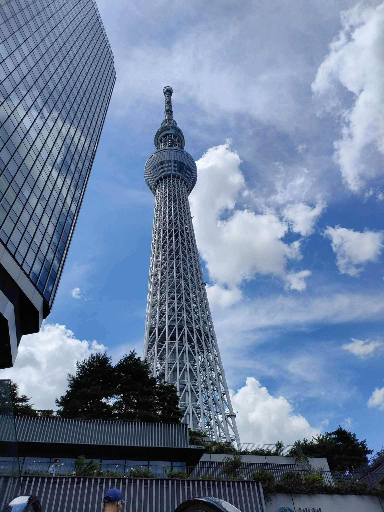
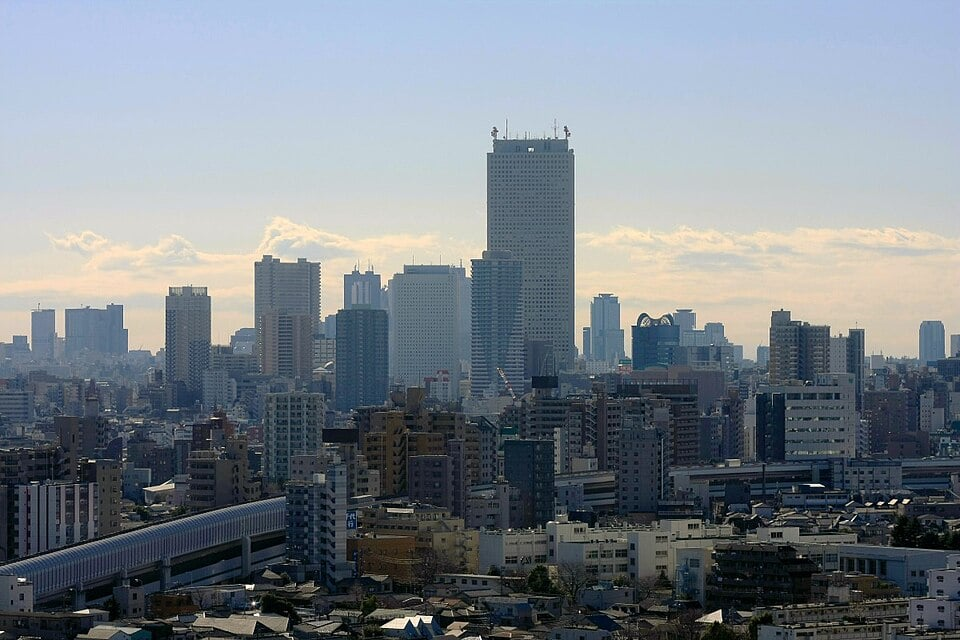
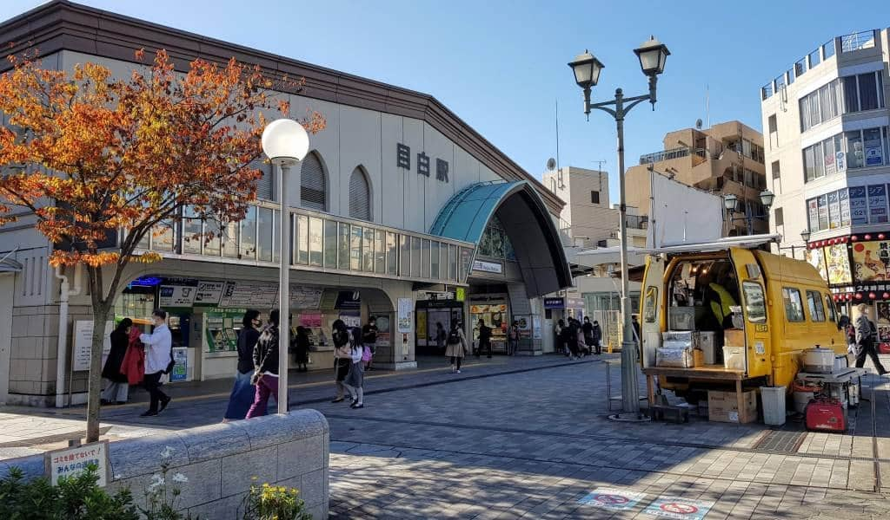

私の目から見た東京

東京は、にぎやかな都会と静かな自然が共存する特別な場所です。 池袋では東京らしいエネルギーと夜景を感じることができ、 目白では静かな庭園と落ち着いた雰囲気を楽しむことができます。 このウェブサイトでは、私が実際に訪れた東京の魅力を紹介します。
東京でのお気に入りの場所


東京を旅行して感じたことは、都会のにぎやかさと自然の静けさが とてもバランスよく共存しているということです。 池袋ではエネルギーと夜景を楽しみ、目白では落ち着いた雰囲気を感じました。 それぞれの場所には違った魅力があり、 写真スポット、ショッピング、グルメ、文化体験など さまざまな楽しみ方ができました。
特に、池袋駅に戻って見学できたことは、とても印象に残りました。 ここは私たちが以前実習をした場所です。 久しぶりに来たので、最初は少し道に迷ってしまいましたが、駅の案内表示を見ながら落ち着いて進み、 無事に目的の場所へ行くことができました。その時、実習のときのことを思い出し、少し懐かしい気持ちになりました。
また、日本の文化についても学ぶことができました。 鳥居や手水舎、神社などを通して、 日本人の礼儀や心の考え方について知ることができ、とても勉強になりました。 この3日間の見学を通して、私は多くのことを学び、 実際の体験を通して自分の考え方も少し成長できたと思います。